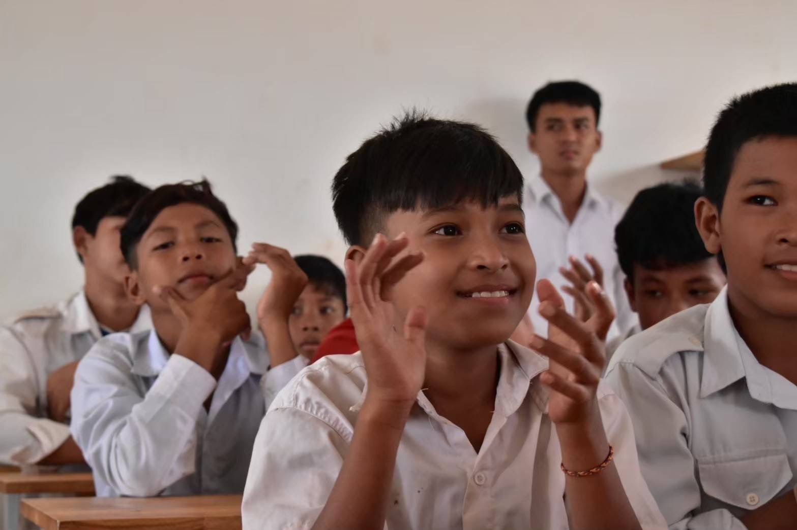

iPJAV
愛をもって日本から
アジアへの純粋な挑戦
愛をもって日本から
アジアへの純粋な挑戦
『NPO法人「アジアの誇りプレアビヒア日本協会」学生隊』を前身に、
『一般財団法人「愛をもって日本からアジアへの純粋な挑戦」(英語名) Pure Venture of Asia from Japan with Love』として２０２４年８月２３日に成立。
日本と広範なアジア地域に新たな共通の価値を創出することを目指す。
contact@ipvaj.or.jp
04 - 2939 - 1029